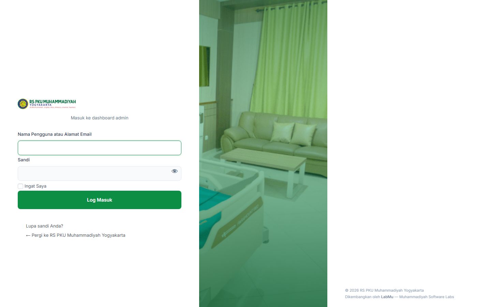

Daftar Isi
- Gambaran Umum Website
- Masuk ke Dashboard Admin
- Panel RS PKU Settings
- Mengelola Konten
- Mengatur Homepage
- Mengelola Dokter
- Mengelola Layanan
- Mengelola Rawat Inap
- Mengelola Poliklinik
- Mengelola Berita & Artikel
- Halaman Statis
- Mengelola Gambar & Media
- Mengatur Menu Navigasi
- Toggle Fitur
- SEO & Schema
- Export & Import Settings
- FAQ & Troubleshooting
1. Gambaran Umum Website
Website RS PKU Muhammadiyah Yogyakarta menggunakan WordPress sebagai CMS dengan theme custom yang dibangun khusus untuk kebutuhan rumah sakit. Theme ini mendukung:
- Tampilan modern, responsif, dan cepat
- 7 jenis konten khusus (Dokter, Poliklinik, Layanan, Rawat Inap, E-Jurnal, Cabang RS, Manajemen)
- Panel settings terpusat untuk seluruh konfigurasi
- Dual bahasa (Indonesia/English) dengan GTranslate
- SEO otomatis dengan Schema.org JSON-LD
- Aksesibilitas (skip navigation, ARIA labels, focus states)
Struktur Halaman Utama
| Halaman | URL | Keterangan |
|---|---|---|
| Beranda | / | Homepage dengan hero, layanan unggulan, dokter, ulasan |
| Cari Dokter | /dokter/ | Daftar & pencarian dokter |
| Jadwal Dokter | /jadwal-dokter/ | Tabel jadwal praktik per hari |
| Poliklinik | /poliklinik/ | Daftar klinik rawat jalan |
| Layanan | /layanan/ | Layanan medis & penunjang |
| Rawat Inap | /rawat-inap/ | Info kamar & fasilitas |
| Berita & Artikel | /berita-artikel/ | Blog/berita rumah sakit |
| E-Jurnal | /e-jurnal/ | Jurnal medis & penelitian |
| Kontak | /kontak/ | Informasi kontak & peta |
| Sejarah | /sejarah-kami/ | Sejarah rumah sakit |
| Manajemen RS | /manajemen-rs/ | Struktur organisasi |
2. Masuk ke Dashboard Admin
- Buka browser, ketik:
https://rspkujogja.com/wp-admin/ - Masukkan username dan password Anda
- Anda akan masuk ke dashboard WordPress
/wp-admin/ agar mudah diakses. Gunakan password yang kuat dan aktifkan 2FA jika tersedia.

Halaman login WordPress (URL custom via WPS Hide Login)
3. Panel RS PKU Settings
Semua konfigurasi website terpusat di menu RS PKU Settings di sidebar kiri WordPress admin. Panel ini memiliki 11 tab:
| Tab | Fungsi |
|---|---|
| Umum | Nama RS, tagline, tahun berdiri |
| Kontak | Telepon IGD, WhatsApp, email, alamat, jam operasional, Google Maps |
| Media Sosial | URL & handle Instagram, Facebook, YouTube, Twitter/X, LinkedIn |
| Homepage | Hero section, CTA, metrics, gambar, layanan & dokter unggulan, ulasan |
| Gambar | Gambar hero per halaman (dokter, fasilitas, berita, dll) |
| Branding | Logo (via Customizer), warna brand |
| Fitur | Toggle fitur (reading progress, TOC, share, related posts, dll) |
| Header | Sticky header, top bar, badge IGD, CTA button |
| CTA | Teks & URL tombol buat janji dokter |
| Footer | Tagline, copyright, disclaimer, quick links |
| Tools | Export/import settings (backup) |

Panel RS PKU Settings — Tab Umum
Cara Mengubah Setting
- Klik RS PKU Settings di sidebar kiri
- Pilih tab yang sesuai (contoh: "Kontak")
- Ubah isian field yang diinginkan
- Klik tombol hijau "Simpan Perubahan" di bagian bawah
- Refresh halaman depan untuk melihat hasilnya
4. Mengelola Konten
Website ini memiliki 7 jenis konten khusus selain post dan page biasa:
| Konten | Menu Admin | Keterangan |
|---|---|---|
| Dokter | Dokter | Profil dokter dengan spesialisasi & jadwal |
| Poliklinik | Poliklinik | Klinik rawat jalan |
| Layanan | Layanan | Layanan medis & penunjang |
| Rawat Inap | Rawat Inap | Info kamar & fasilitas |
| E-Jurnal | Jurnal | Publikasi jurnal medis |
| Manajemen RS | Manajemen RS | Profil pimpinan & direksi |
| Cabang RS | Cabang RS | Info cabang rumah sakit |
Cara Umum Menambah Konten Baru
- Di sidebar, klik menu konten yang diinginkan (contoh: "Dokter")
- Klik tombol "Tambah Dokter Baru" di bagian atas
- Isi judul dan detail konten
- Set gambar featured (Featured Image) di panel kanan
- Klik "Terbitkan" (atau "Simpan Draft" jika belum siap)
5. Mengatur Homepage
Homepage terdiri dari beberapa section yang semuanya dikontrol dari RS PKU Settings → Tab Homepage:
Hero Section (Bagian Atas)
- Gambar Hero: Upload gambar rasio 4:3, minimal 1200px lebar
- Badge Text: Teks kecil di atas judul (contoh: "RS Islami Unggul")
- Judul Utama: Boleh pakai HTML untuk highlight. Contoh:
<span class="text-hospital-600">Terpercaya</span> - Deskripsi: 1-2 kalimat deskripsi RS
- Tombol CTA: 2 tombol (utama + kedua) dengan teks dan URL
Metrics (Angka Statistik)
3 angka yang tampil di bawah hero. Contoh:
- Metric 1: 100+ → "Tahun Melayani"
- Metric 2: 200+ → "Dokter Spesialis"
- Metric 3: 50.000+ → "Pasien Per Tahun"
Layanan Unggulan
Pilih maksimal 6 layanan yang tampil di homepage. Jika tidak dipilih, otomatis menampilkan layanan terbaru.
Dokter Unggulan
Pilih maksimal 6 dokter yang tampil di homepage. Jika tidak dipilih, otomatis menampilkan dokter terbaru.
Ulasan (Reviews)
Tambahkan ulasan manual dari Google Maps:
- Nama reviewer
- Rating (1-5 bintang)
- Tanggal (format: "Januari 2026")
- Kutipan ulasan

Tab Homepage — pengaturan Hero, Metrics, dan Featured Content
6. Mengelola Dokter
Menambah Dokter Baru
- Klik Dokter → Tambah Dokter Baru
- Isi judul dengan nama lengkap dokter (contoh: "dr. Ahmad Fadli, Sp.PD")
- Isi detail konten menggunakan block editor
- Set Featured Image — foto formal dokter (rasio potrait 4:5, min 720px)
- Pilih Spesialisasi dari taxonomy yang tersedia
- Klik Terbitkan
Mengelola Spesialisasi
Buka Dokter → Spesialisasi Dokter untuk menambah kategori spesialisasi baru (Penyakit Dalam, Bedah, Anak, dll).
7. Mengelola Layanan
- Klik Layanan → Tambah Layanan Baru
- Isi judul layanan (contoh: "Hemodialisis")
- Tulis deskripsi lengkap layanan
- Set gambar dan kategori layanan
- Terbitkan
Kategori Layanan
Layanan dikelompokkan via taxonomy Kategori Layanan:
- Layanan Unggulan
- Layanan Penunjang
- Layanan Medis
8. Mengelola Rawat Inap
- Klik Rawat Inap → Tambah Rawat Inap Baru
- Isi nama tipe kamar (contoh: "Kelas VIP", "Kelas 1")
- Tulis fasilitas dan informasi harga
- Upload foto kamar sebagai Featured Image
- Terbitkan
9. Mengelola Poliklinik
- Klik Poliklinik → Tambah Poliklinik Baru
- Isi nama klinik (contoh: "Poliklinik Penyakit Dalam")
- Tulis deskripsi, jadwal, dan dokter yang bertugas
- Upload gambar dan terbitkan
10. Mengelola Berita & Artikel
Berita menggunakan fitur Pos bawaan WordPress:
- Klik Pos → Tambah Pos Baru
- Tulis judul dan isi artikel
- Pilih Kategori yang sesuai
- Set Featured Image (minimal 960×720 pixel)
- Isi Kutipan/Excerpt (ringkasan 1-2 kalimat)
- Klik Terbitkan
Fitur Artikel Otomatis
Jika toggle fitur aktif, artikel akan otomatis memiliki:
- Reading Progress Bar — bar hijau di atas halaman
- Table of Contents — daftar isi otomatis di sidebar
- Share Buttons — tombol berbagi di sidebar
- Related Articles — artikel terkait di bawah konten
- Populer Dibaca — sidebar artikel populer
11. Halaman Statis
Beberapa halaman menggunakan template khusus yang otomatis aktif berdasarkan slug:
| Slug Halaman | Template |
|---|---|
| berita-artikel | Daftar berita dengan pagination |
| e-jurnal | Daftar e-jurnal |
| fasilitas-rawat-inap | Gallery kamar rawat inap |
| jadwal-dokter | Tabel jadwal per hari/spesialisasi |
| kontak | Halaman kontak + maps |
| sejarah-kami | Timeline sejarah RS |
12. Mengelola Gambar & Media
Ukuran Gambar yang Disarankan
| Kegunaan | Rasio | Ukuran Minimal |
|---|---|---|
| Hero halaman | 16:9 | 1600 × 900 px |
| Card/thumbnail | 4:3 | 960 × 720 px |
| Foto dokter | 4:5 (potrait) | 720 × 900 px |
| Logo | Bebas | Min 96px tinggi |
| CTA Image | 1:1 | 600 × 600 px |
- Kompres gambar sebelum upload (gunakan TinyPNG atau ShortPixel)
- Format: JPG untuk foto, PNG untuk logo/grafis transparan
- Isi Alt Text pada setiap gambar untuk aksesibilitas & SEO
Upload Gambar di Settings
- Buka RS PKU Settings → tab yang memiliki field gambar
- Klik tombol "Pilih Gambar"
- Upload atau pilih dari Media Library
- Klik "Simpan Perubahan"
13. Mengatur Menu Navigasi
Website memiliki 3 lokasi menu:
| Lokasi | Tampil di |
|---|---|
| Primary Menu | Header utama (desktop & mobile) |
| Footer Menu | Kolom footer |
| Utility Menu | Top bar / utilitas |
Cara Mengubah Menu
- Buka Tampilan → Menu
- Pilih menu yang ingin diedit dari dropdown
- Tambah/hapus/susun ulang item menu dengan drag & drop
- Klik "Simpan Menu"
14. Toggle Fitur
Buka RS PKU Settings → Tab Fitur untuk mengaktifkan/nonaktifkan fitur:
| Fitur | Keterangan |
|---|---|
| Reading Progress Bar | Bar hijau di atas saat baca artikel |
| Table of Contents | Daftar isi otomatis dari heading artikel |
| Share Buttons | Tombol share floating di sidebar |
| Related Articles | Artikel terkait di bawah konten |
| Populer Dibaca | Widget artikel populer di sidebar |
| Language Switcher | Tombol ganti bahasa Indonesia/English |
| Reviews Carousel | Carousel ulasan pasien di homepage |
| JSON-LD Schema | Structured data SEO otomatis |
Cukup klik toggle Aktif/Nonaktif lalu simpan. Perubahan langsung berlaku.
15. SEO & Schema
Website sudah dilengkapi optimasi SEO otomatis:
- Meta Description otomatis — setiap halaman/CPT punya deskripsi default jika belum diisi via Yoast
- JSON-LD Schema — structured data untuk Hospital, Physician, MedicalClinic, Article (aktifkan di tab Fitur)
- Robots directives — halaman pencarian dan filtered archive otomatis noindex
- Semantic HTML — heading hierarchy, landmark regions, ARIA labels
16. Export & Import Settings
Export (Backup)
- Buka RS PKU Settings → Tab Tools
- Klik tombol "Download JSON"
- File
rspku-settings-YYYYMMDD.jsonakan terunduh - Simpan file ini sebagai backup
Import (Restore)
- Buka RS PKU Settings → Tab Tools
- Pilih file JSON yang sudah di-export sebelumnya
- Klik "Upload & Terapkan"
- Semua settings akan ditimpa dengan isi file
17. FAQ & Troubleshooting
Q: Perubahan settings tidak muncul di website?
A: Coba hard refresh browser (Ctrl+Shift+R). Jika pakai cache plugin, bersihkan cache dari dashboard.
Q: Gambar hero tidak muncul?
A: Pastikan gambar sudah di-upload melalui field gambar di RS PKU Settings (bukan hanya di Media Library). Klik "Pilih Gambar" → pilih → Simpan.
Q: Dokter/layanan tidak muncul di homepage?
A: Cek 2 hal: (1) Konten harus berstatus Terbitkan (bukan Draft), (2) Jika menggunakan fitur "pilih manual" di Settings → Homepage, pastikan sudah dicentang.
Q: Menu dropdown tidak muncul?
A: Pastikan item menu memiliki sub-item (drag ke kanan untuk membuat child item di Tampilan → Menu).
Q: Bagaimana ganti logo?
A: Buka Tampilan → Customize → Site Identity → Logo. Upload logo baru lalu klik Publikasikan.
Q: Bagaimana menambah halaman baru dengan template khusus?
A: Buat Page baru via Laman → Tambah Laman Baru. Gunakan slug sesuai tabel di bagian "Halaman Statis" di atas. Template otomatis terpilih berdasarkan slug.
Q: Website lambat, apa yang harus dilakukan?
A: (1) Kompres gambar sebelum upload, (2) Aktifkan cache plugin (WP Super Cache / LiteSpeed Cache), (3) Kurangi jumlah plugin non-esensial.
Lampiran: Cara Generate Screenshot Otomatis
Panduan ini dilengkapi script otomatis untuk menangkap screenshot dari admin panel. Untuk menjalankan:
- Pastikan Laragon sedang berjalan dan site aktif di
http://rspkudev.test - Buka file
docs/capture-screenshots.mjsdan edit 3 variabel:LOGIN_URL— URL login custom (dari WPS Hide Login)ADMIN_USER— username adminADMIN_PASS— password admin - Buka terminal di root project dan jalankan:
node docs/capture-screenshots.mjs - 18 screenshot akan tersimpan di folder
docs/images/ - Buka file HTML ini di browser untuk melihat hasilnya
- 01-login.png
- 02-dashboard.png
- 03-settings-umum.png
- 04-settings-kontak.png
- 05-settings-homepage.png
- 06-settings-gambar.png
- 07-settings-fitur.png
- 08-settings-header.png
- 09-settings-footer.png
- 10-settings-tools.png
- 11-dokter-list.png
- 12-layanan-list.png
- 13-poliklinik-list.png
- 14-menus.png
- 15-frontend-homepage.png
- 16-frontend-homepage-full.png
- 17-frontend-dokter.png
- 18-frontend-layanan.png